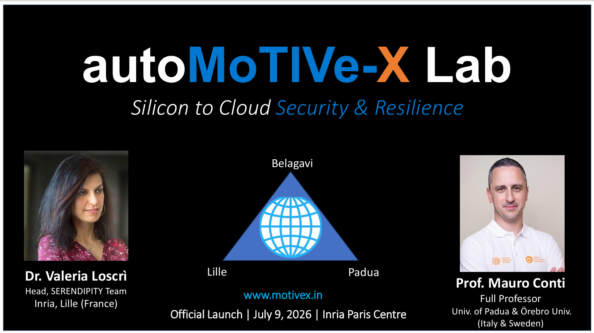
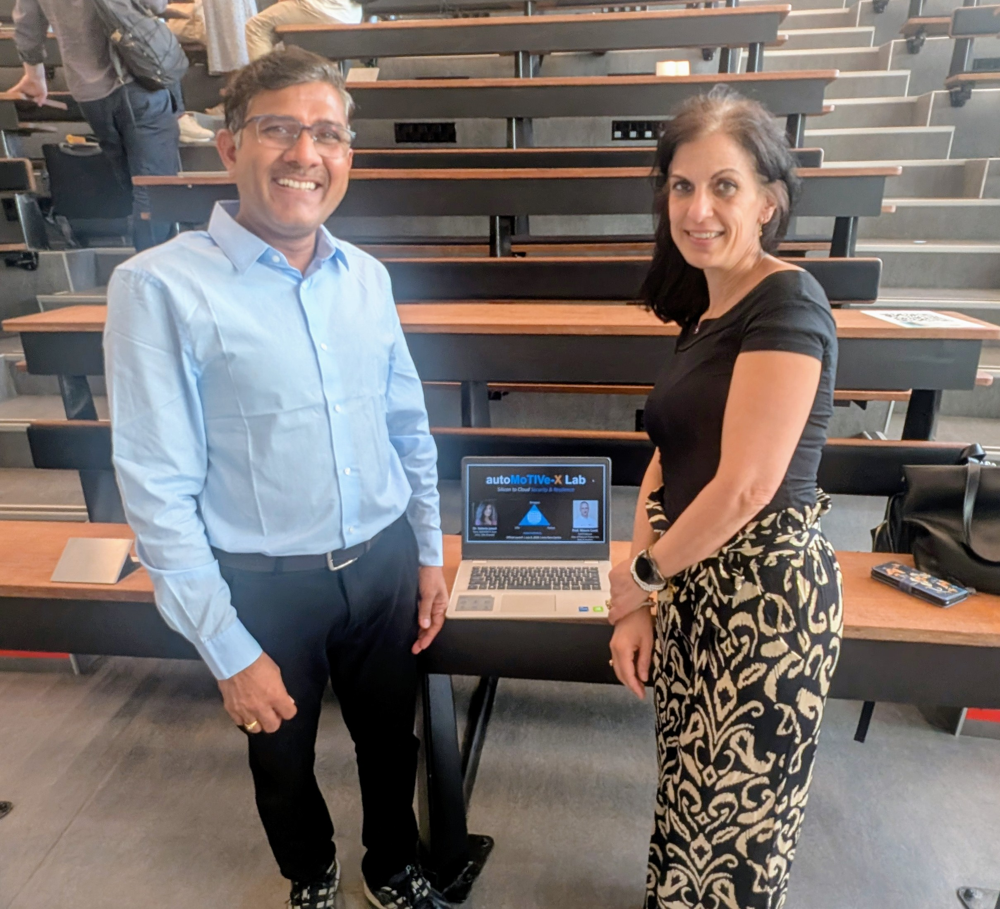
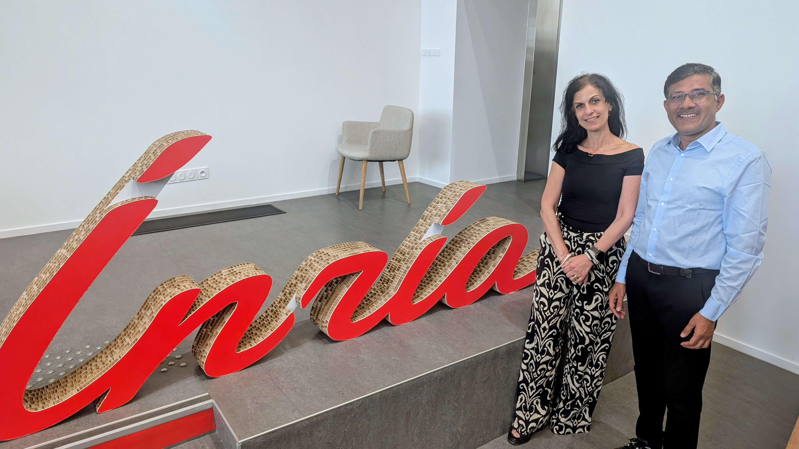
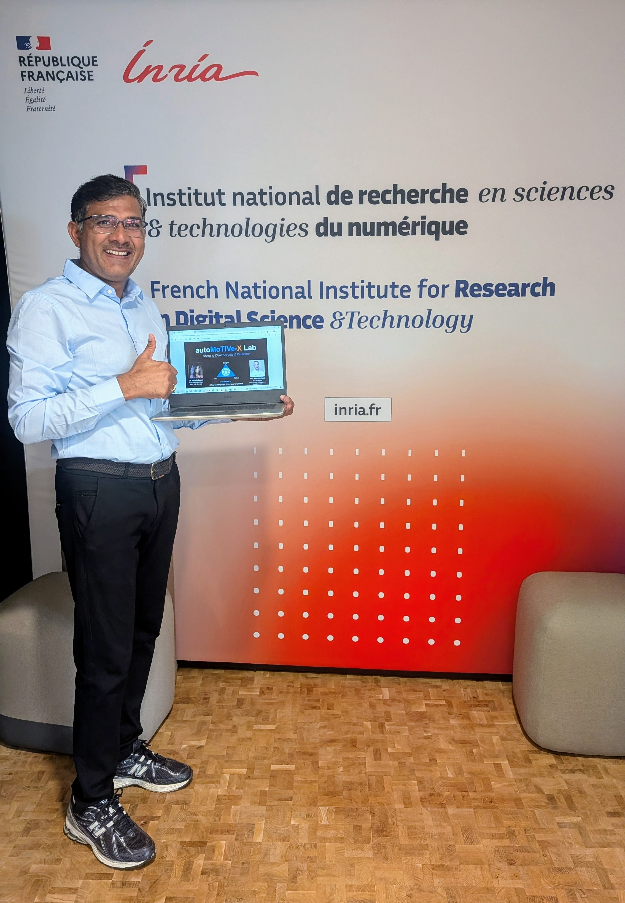

Fellowship milestones, invited talks, standards-body activity, and public outreach from the lab.
The autoMoTIVe-X Lab was officially inaugurated at the Inria Paris Centre. Director Dr. Shrikant Tangade announced the Founding Scientific Advisory Board, featuring world-renowned experts Dr. Valeria Loscrì (Inria) and Prof. Mauro Conti (University of Padua). The lab serves as a global bridge for "Silicon-to-Cloud" security research.
Dr. Shrikant Tangade presented a featured session at Inria's "THEMATIC WORKSHOP: Role of Data & Services in Modern Digital Infrastructures" in Paris. The talk, titled "ZK-SCALHARD: A HIERARCHICAL ZKP SERVICE FOR DATA SOVEREIGNTY AND SCALABLE TRUST IN ZONAL SDV INFRASTRUCTURES," detailed the lab's breakthroughs in O(1) constant-time verification and hardware-anchored trust for Software-Defined Vehicles.
The lab's founding research, "zk-ScalHard: Scalable and Hardware-Rooted Privacy-Preserving Authentication for Secure OTA Updates in Zonal SDVs," is now live on ArXiv (arXiv:2607.07371). The paper achieves constant-size O(1) scalability and demonstrates a 99.2% reduction in authentication bandwidth & a 99.9% reduction in the physical attack surface using novel ZKP circuits.
autoMoTIVe-X conducted a comprehensive industry gap analysis at the Sec SDV Conference in Berlin. Engaging with security leads from CARIAD, AUMOVIO, and Denso, the lab aligned its 3-year research roadmap with critical OEM/ Tier-1 pain points in secure OTA updates, rollback integrity, PQC migration, and Zero-Day Clock (VM).
The autoMoTIVe-X Lab was officially inaugurated at the Inria Paris Centre. Director Dr. Shrikant Tangade announced the Founding Scientific Advisory Board, featuring world-renowned experts Dr. Valeria Loscrì (Inria) and Prof. Mauro Conti (University of Padua). The lab serves as a global bridge for "Silicon-to-Cloud" security research.




Dr. Shrikant Tangade presented a featured session at Inria's "THEMATIC WORKSHOP: Role of Data & Services in Modern Digital Infrastructures" in Paris. The talk, titled "ZK-SCALHARD: A HIERARCHICAL ZKP SERVICE FOR DATA SOVEREIGNTY AND SCALABLE TRUST IN ZONAL SDV INFRASTRUCTURES," detailed the lab's breakthroughs in O(1) constant-time verification and hardware-anchored trust for Software-Defined Vehicles.
The lab's founding research, "zk-ScalHard: Scalable and Hardware-Rooted Privacy-Preserving Authentication for Secure OTA Updates in Zonal SDVs," is now live on ArXiv (arXiv:2607.07371). The paper achieves constant-size O(1) scalability and demonstrates a 99.2% reduction in authentication bandwidth & a 99.9% reduction in the physical attack surface using novel ZKP circuits.
autoMoTIVe-X conducted a comprehensive industry gap analysis at the Sec SDV Conference in Berlin. Engaging with security leads from CARIAD, AUMOVIO, and Denso, the lab aligned its 3-year research roadmap with critical OEM/ Tier-1 pain points in secure OTA updates, rollback integrity, PQC migration, and Zero-Day Clock (VM).
The lab establishes its founding headquarters at AMBIT, Belagavi, anchoring its India-based research and engineering operations.
AMBIT will host the inauguration of the IEEE VTS Automotive Cybersecurity Center of Excellence, strengthening the lab's standards-body engagement.